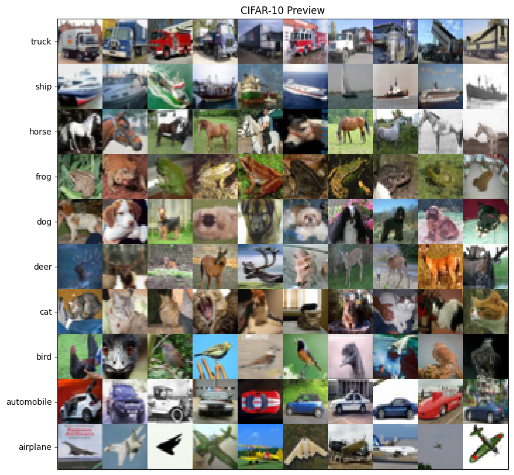

相关知识点: NumPy 科学计算包，如向量化操作，广播机制等
本次案例中，你需要用 Python 实现 Logistic 回归和 SoftMax 回归方法，用于 CIFAR-10 图像分类任务。你需要完成前向计算 loss 和参数更新。
在更新参数的过程中，你需要实现参数梯度的计算，并按照随机梯度下降法来更新参数。
具体计算方法可自行推导，或参照第三章课件。
CIFAR-10 数据集是机器学习领域中广泛使用的彩色图像分类数据集。它包含 50,000 个训练样本和 10,000 个测试样本。所有图像均已进行尺寸规格化并标注类别。每个样本是一个 3,072 × 1 的向量，是从原始的 32 × 32 像素 RGB 图像转换而来（即 3 通道 × 32 × 32 = 3072）。CIFAR-10 中的图像共分为 10 个类别，包括飞机、汽车、鸟类、猫、鹿、狗、青蛙、马、轮船和卡车。下面显示了一些示例。注意：在训练期间，切勿以任何形式使用有关测试样本的信息。

请根据以下要求实现 Logistic 回归 与 SoftMax 回归。本作业包含 Python 3 代码编写与 Jupyter Notebook 文件编辑。我们已提供完整的代码框架，运行前请确保安装以下第三方库：numpy、tqdm、matplotlib。
数据文件： 请在 data/ 文件夹中下载并放置 CIFAR-10 数据文件 cifar-10-python.zip（无需解压）。下载链接见文档末尾。
代码文件： hw1a.ipynb、hw1b.ipynb 这两个 Jupyter Notebook 文件分别实现了 Logistic 回归和 SoftMax 回归的数据加载、训练及测试流程。
完成 hw1a.ipynb 和 hw1b.ipynb 中的所有 TODO 部分，并提交完整代码文件，包含运行结果。不要提交数据集。
提交一份 PDF / DOCX / PPTX 格式的实验报告，内容需包含以下部分：
比较使用和不使用 bias 偏置项对分类结果的影响，绘制出 Logistic 和 SoftMax 回归在训练与测试集上的 Loss 和 Accuracy 曲线图，并简单加以分析。可以从收敛性和准确率等方面讨论差异。
比较使用和不使用 momentum 动量对分类结果的影响。两种回归的曲线图绘制及分析讨论要求同上。
（仅针对 SoftMax 回归）尝试调整 batch size，观察其如何影响模型性能。随后进一步，在 固定每个 epoch 内权重更新次数 （即 step 数）的条件下，调整 batch size 并观察其影响。请结合实验结果，论述固定 step 数的必要性及其原因。曲线图绘制及分析讨论要求同上。
请避免对单个标量使用 for 循环，尽量使用向量化操作以提高执行效率。
报告中请勿粘贴大量代码，仅可保留关键代码段并加以注释说明。请勿直接粘贴大篇幅的训练日志输出文本。
禁止使用 TensorFlow、PyTorch 等深度学习框架，需基于 NumPy 等基础库自行实现模型算法。
禁止抄袭。
CIFAR-10 数据集下载地址（任选其一下载）：
https://www.cs.toronto.edu/~kriz/cifar.htmlhttps://cloud.tsinghua.edu.cn/d/4cce144cb81b4fb98d12/https://pan.baidu.com/s/1ne3dr7-38KFiMsQRtgBNmg?pwd=sdxx （提取码：sdxx）